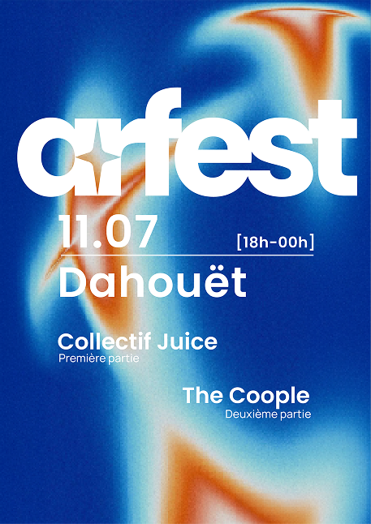
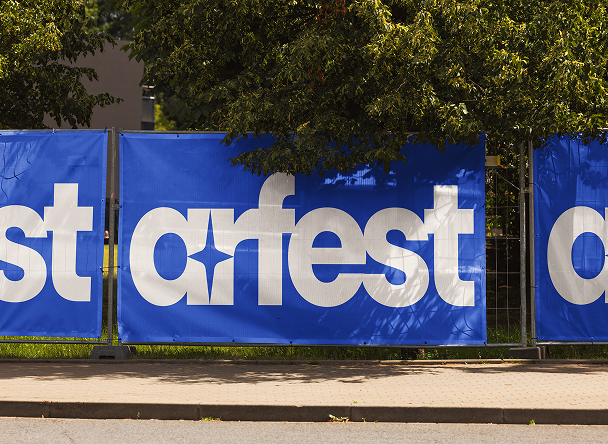
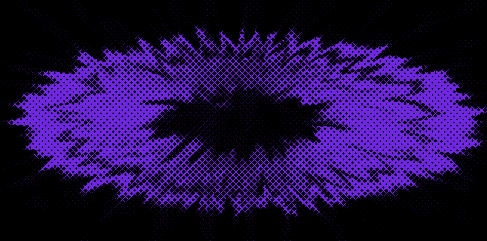
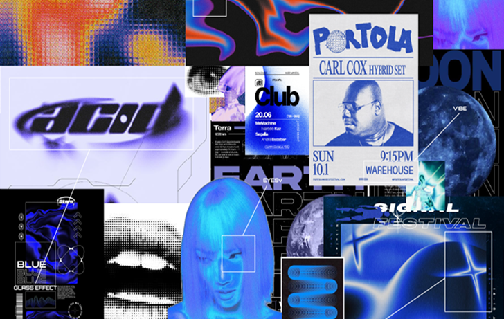
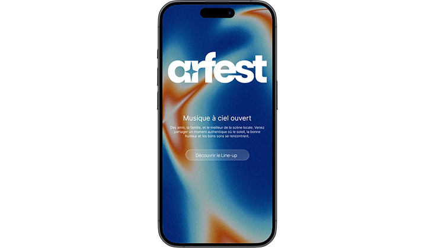
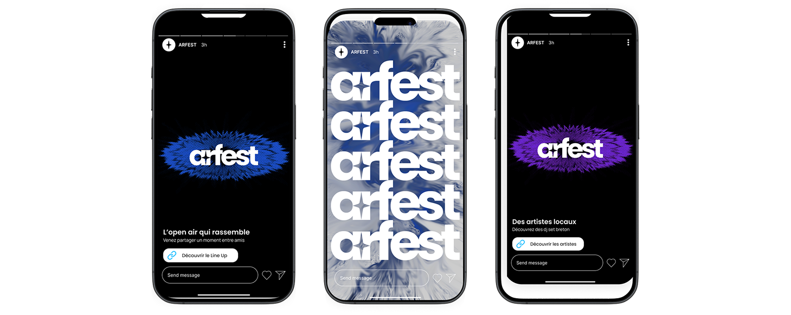

AR FEST est une association événementielle ambitieuse née à Pléneuf-Val-André d'une volonté claire : dynamiser le littoral breton à travers quatre événements Open Air. Au cœur de son identité, l'association place l'éco-responsabilité et la préservation de l'environnement marin au premier plan de ses engagements.
Pour ses créateurs, la fête dépasse le simple divertissement ; elle est un puissant vecteur de lien social et de solidarité. C’est pourquoi AR FEST fusionne culture musicale et engagement associatif, notamment dans la lutte contre la mucoviscidose avec NSD. Son objectif est double : fédérer toutes les générations autour de l'identité maritime et prouver que l'énergie collective peut servir des causes environnementales et sociales concrètes.



Ce projet est le fruit d'un workshop académique de six mois, réalisé en totale autonomie avec une ambition précise : concevoir l'identité et la stratégie d'un événement, réel ou fictif, sur une thématique libre. L'exercice imposait de placer la cohérence globale et la pluridisciplinarité au premier plan.
Ce travail dépasse la simple création graphique ; il est une mise en situation réelle mêlant expertise UX/UI, marketing et développement. C'est pourquoi j'ai choisi de piloter AR FEST de A à Z, fusionnant recherche utilisateur et conception technique. Mon objectif était double : relever un défi créatif d'envergure et démontrer ma capacité à orchestrer un projet digital et print complet, de la stratégie jusqu'à la maquette finale.

Pour piloter ce projet, j’ai mis en place une organisation rigoureuse sur Notion, structurée en trois pôles : Design, Marketing et Développement. Cette gestion de projet m'a permis de prioriser les tâches essentielles et de suivre mon avancement sur six mois.
La phase Marketing a constitué le socle du projet : analyses de marché (SWOT, 5W), définition du positionnement, stratégie de communication et objectifs SMART. Ce travail a guidé la création d'une Direction Artistique moderne, déclinée sur des supports print (affiches) et digitaux (réseaux sociaux, site web). L'objectif était d'assurer une cohérence visuelle forte tout en optimisant l'impact de la communication sur chaque levier.

Ce projet me tient particulièrement à cœur car il réunit ma fibre entrepreneuriale et mon envie de créer du lien social. Au-delà de l'aspect technique, mon ambition était de concevoir un événement porteur de sens, capable de fédérer un public autour de sujets essentiels comme la solidarité et la préservation de l'environnement.
Ce projet ne s'arrête pas au stade théorique : il a pour ambition de prendre vie concrètement durant l'été 2026 à Pléneuf-Val-André. Cette étape marquera le passage de la stratégie à l'événementiel de terrain, transformant cette vision en une expérience collective réelle.
